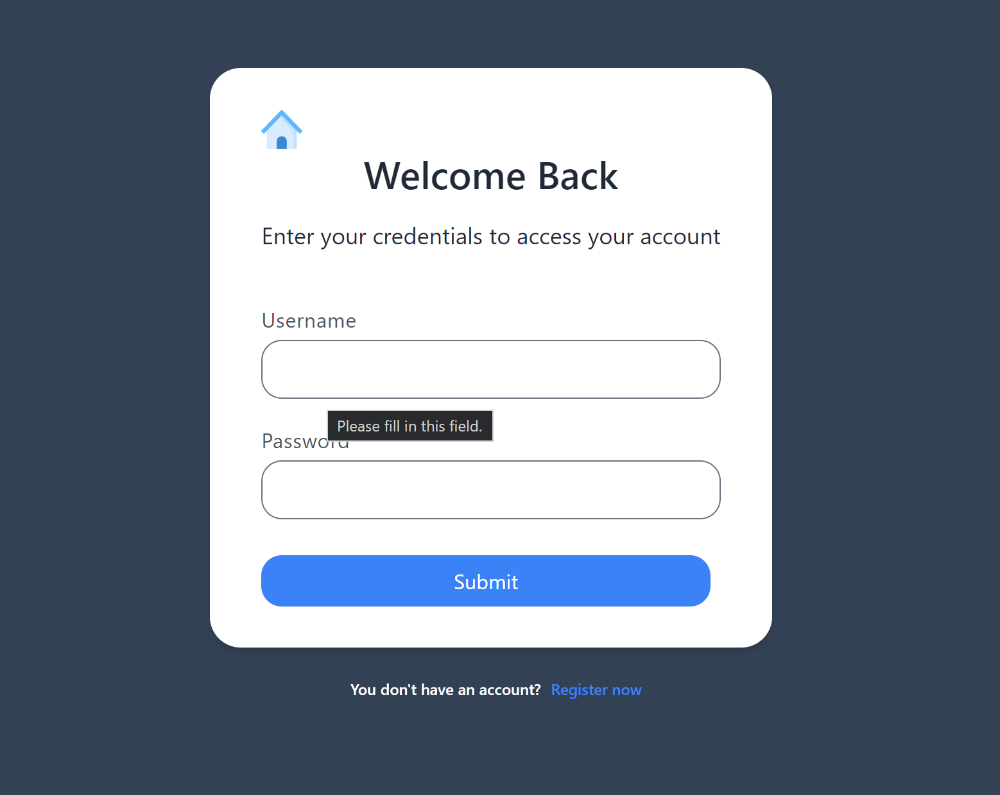
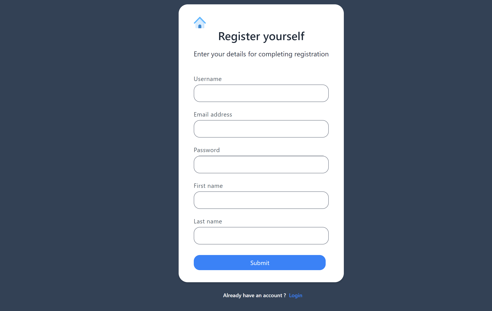
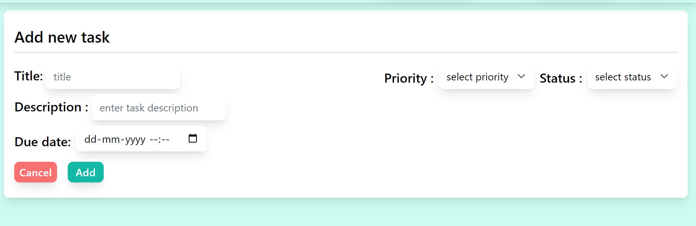
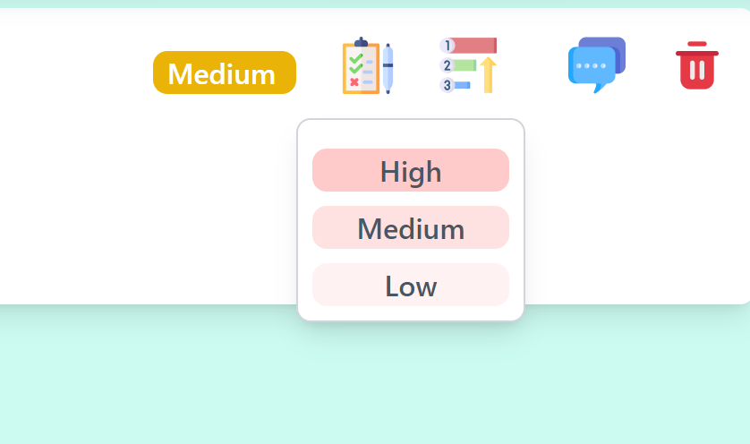
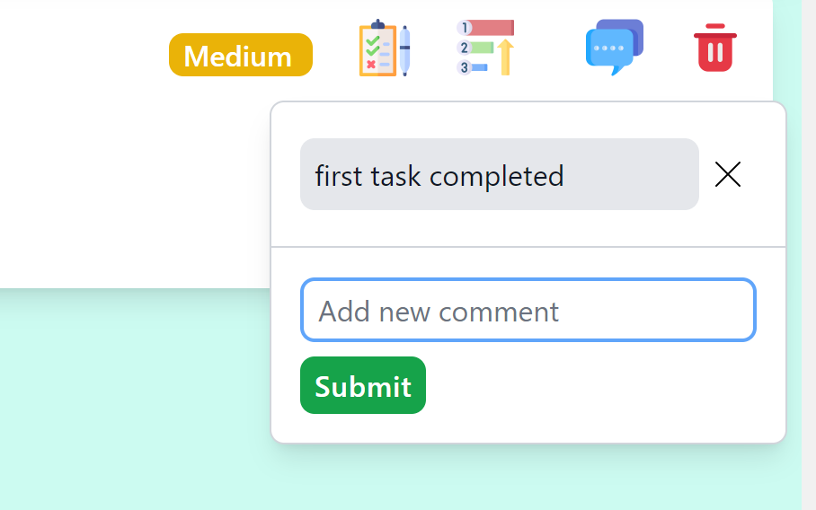

- Type
- Productivity · Web app
- For
- Individuals and teams
Taskify is a comprehensive task management application designed to help individuals and teams efficiently organise and track their tasks and projects. It was developed with the aim of providing a user-friendly interface, robust functionality, and a seamless experience for users to manage their tasks with ease.
Studies
Project screenshots





